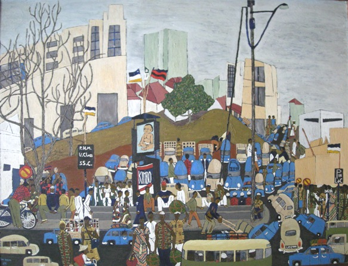

Ignatius Sserulyo
1937–2018
Artist Biography
Ignatius Sserulyo studied at the Margaret Trowell School of Fine Art at Makerere University in Kampala, Uganda, from 1960 to 1964 and remained closely associated with the institution throughout his career. He completed his MA in Fine Art at Makerere between 1969 and 1974 and taught at the university from 1973 to 2002, serving as Head of School from 1982 to 1986.
Recognized as one of the finest Ugandan artists of the 1960s generation, Sserulyo served as Visiting Artist at the Ruskin School of Drawing and Fine Art, Oxford, in 1982, and held a solo exhibition at Wolfson College, Oxford, in the same year. He became best known for large-scale murals and sculptures depicting contemporary social scenes in a distinctive semi-realist style. His work has been exhibited widely internationally, including group exhibitions at the Whitechapel Gallery in London, the Malmö Kunsthall in Sweden, and the Solomon R. Guggenheim Museum in New York.

At the Car Park, 1969